December 15, 2010
(Next Release on December 22, 2010)
Higher Prices Boost Additions to Oil Proved Reserves in 2009
The Energy Information Administration’s U.S. Crude Oil, Natural Gas, and Natural Gas Liquids Proved Reserves, 2009 reports that the Nation’s estimated proved reserves of oil (crude oil plus lease condensate) increased by nearly 9 percent in 2009, primarily because of significantly higher prices used to estimate proved reserves. Proved reserves are those volumes that geological and engineering data demonstrate with reasonable certainty to be recoverable from known reservoirs under existing economic and operating conditions.
Crude oil prices are one of the key factors affecting the level of proved reserves reported to EIA. Higher prices typically increase estimates (positive revisions), as a broader portion of the resource base meets the economic test included in the definition of proved reserves. Lower prices generally reduce estimates (negative revisions), as the portion of the total resource base that can be produced under existing economic conditions contracts. Under Securities and Exchange Commission rules introduced for the 2009 reporting year, companies estimated their 2009 proved reserves using the average of the twelve first-day-of-the-month prices. In prior years, estimates were based on the market price on the last trading day of the year.
Oil (Crude Oil plus Lease Condensate). The average crude oil price for 2009 was close to 40 percent higher than the end-of-year price for 2008. Net revisions surpassed 2 billion barrels, the highest positive change in over twenty years. Discoveries also increased, contributing about 1.5 billion barrels to proved reserves. (As is typical, discoveries were mostly in the form of extensions, which are reserve additions resulting from the extension of previously discovered reservoirs.)
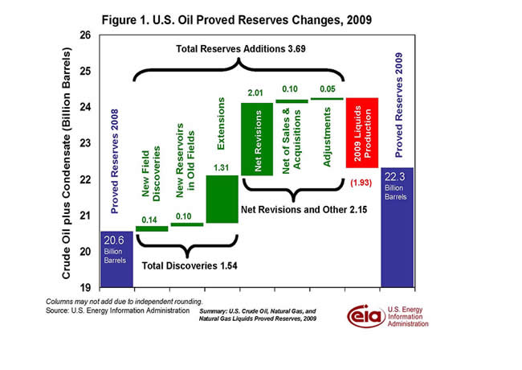
The onshore Lower 48 States accounted for nearly 85 percent of the overall oil proved reserves increase. While much of these additions are in conventional fields, the horizontal drilling and hydraulic fracturing technologies used to increase shale gas production have also boosted unconventional oil reserves, especially from the Bakken Formation straddling North Dakota and Montana. Higher prices and drilling activity in the deepwater areas of the Gulf of Mexico Federal Offshore drove that region's second consecutive increase in proved reserves after four consecutive years of decline, and contributed about 13 percent of the year’s overall oil additions. (Note: The sinking of the Deepwater Horizon drilling rig in May 2010 and the subsequent oil spill into the Gulf of Mexico were not factors in the proved reserves estimates for 2009, nor were the deepwater drilling moratoria issued in response to these events.)
Natural Gas (Including Plant Liquids). Proved reserves of natural gas (wet natural gas including plant liquids) rose by nearly 30 trillion cubic feet (Tcf) in 2009, about 11 percent, despite a considerable drop in natural gas prices. Driving the increase - the largest since EIA began reporting proved reserves - was continued growth from shale gas, up 26.2 Tcf (76 percent) from 2008. Sharp increases in shale gas proved reserves since 2007 have taken place during a period of sustained low natural gas prices. The price operators used to estimate natural gas reserves dropped 21 percent in 2008 and another 32 percent in 2009.
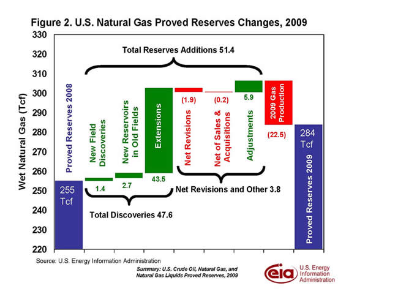
Due largely to the decline in the natural gas prices used to estimate proved reserves since 2007, negative revisions in the 2008 and 2009 reports on proved reserves were, respectively, the second and third largest in the three decades that EIA has been publishing proved reserves estimates. However, total natural gas proved reserves increased in each year (3 percent in 2008 and 11 percent in 2009), underscoring the major contribution of shale gas exploration and production technologies. Excluding shale gas, natural gas proved reserves dropped about 2 percent in 2008 and rose only modestly (about 1 percent) in 2009.
Note: EIA’s previous annual proved reserves summaries provided reserves data for lease condensate and plant liquids, which were grouped together as natural gas liquids. To improve comparability across EIA data offerings, estimates for the 2009 reporting year combine lease condensate with crude oil (as oil) and include plant liquids in wet natural gas.
Retail gasoline and diesel prices increase
The U.S. average retail price for a gallon of gasoline increased for the second straight week, up more than two cents from last week to $2.98 per gallon, and $0.38 per gallon higher than last year at this time. West Coast gasoline prices increased more than three cents, the largest gain versus last week. West Coast gasoline remains the most expensive in the country at $3.19 per gallon. Prices on the East Coast and in the Rocky Mountains were up almost three cents, while prices on the Gulf Coast gained more than two cents. Rounding out the regions, the Midwest saw its average gasoline price increase a penny from last week.
Diesel prices also advanced this week as the average retail diesel price increased three cents. The national average for a gallon of diesel is now $3.23 per gallon, $0.48 higher than last year at this time. Prices on the East Coast gained the most, jumping more than four cents versus last week. The West Coast registered a full four-cent increase. As with gasoline, diesel is most expensive in the West Coast region at $3.36 per gallon. The Gulf Coast and Midwest both saw diesel prices rise three cents. The Rocky Mountain diesel price was a penny higher than last week, marking its tenth increase in the last eleven weeks.
Residential Heating Fuel Prices Continue to Rise
Residential heating oil prices increased during the period ending December 13, 2010. The average residential heating oil price increased by approximately $0.04 per gallon last week to reach $3.24 per gallon, an increase of nearly $0.50 per gallon from the same time last year. Wholesale heating oil prices decreased by less than $0.02 per gallon last week, reaching $2.53 per gallon. This is $0.56 per gallon higher than last year’s price.
The average residential propane price increased by $0.03 per gallon to reach $2.63 per gallon. This was an increase of $0.27 per gallon compared to the $2.36 per gallon average from the same period last year. Wholesale propane prices increased by less than $0.02 per gallon to $1.33 per gallon. This was an increase of almost $0.09 per gallon compared to the December 14, 2009 price of $1.25 per gallon.
Cold Snap Leads to another Draw in Propane Stocks
U.S. inventories of propane fell last week as below normal temperatures spread across Midwest and East Coast. Total inventories dropped by 1.9 million barrels to end at 61.2 million. The Midwest regional stocks dropped 0.9 million barrels while the East Coast region drew 0.7 million barrels of inventory. The Gulf Coast region drew 0.2 million barrels of propane and the Rocky Mountain/West Coast inventories fell 0.1 million barrels. Propylene non-fuel use inventories represented 3.1 percent of total propane inventories.
Text from the previous editions of This Week In Petroleum is accessible through a link at the top right-hand corner of this page.
| Retail Prices (Dollars per Gallon) | |||||||
| 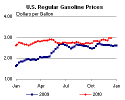 | 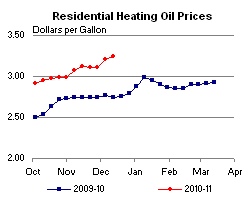 | ||||||
| 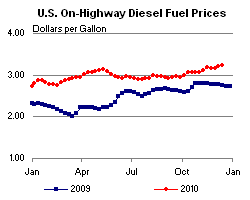 | 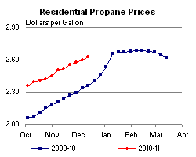 | ||||||
| Retail Data | Changes From | Retail Data | Changes From | ||||
| 12/13/10 | Week | Year | 12/13/10 | Week | Year | ||
| Gasoline | 2.980 | Heating Oil | 3.243 | ||||
| Diesel Fuel | 3.231 | Propane | 2.628 | ||||
| Futures Prices (Dollars per Gallon*) | |||||||||||||||||||||||||||
| 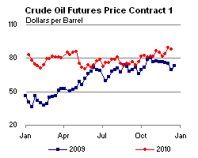 | 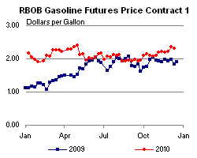 | ||||||||||||||||||||||||||
|
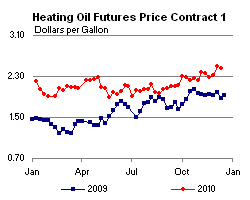 | ||||||||||||||||||||||||||
| *Note: Crude Oil Price in Dollars per Barrel. | |||||||||||||||||||||||||||
| Stocks (Million Barrels) | |||||||
| 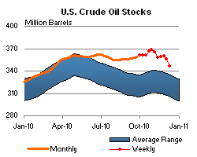 | 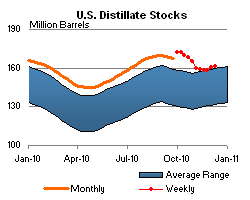 | ||||||
| 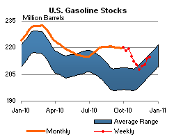 | 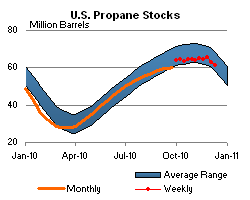 | ||||||
| Stocks Data | Changes From | Stocks Data | Changes From | ||||
| 12/10/10 | Week | Year | 12/10/10 | Week | Year | ||
| Crude Oil | 346.0 | Distillate | 161.3 | ||||
| Gasoline | 214.8 | Propane | 61.166 | ||||